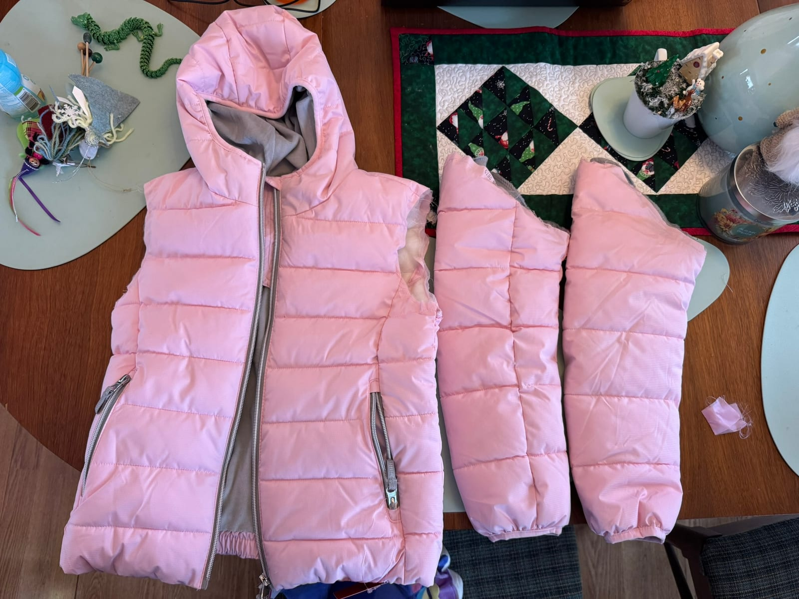
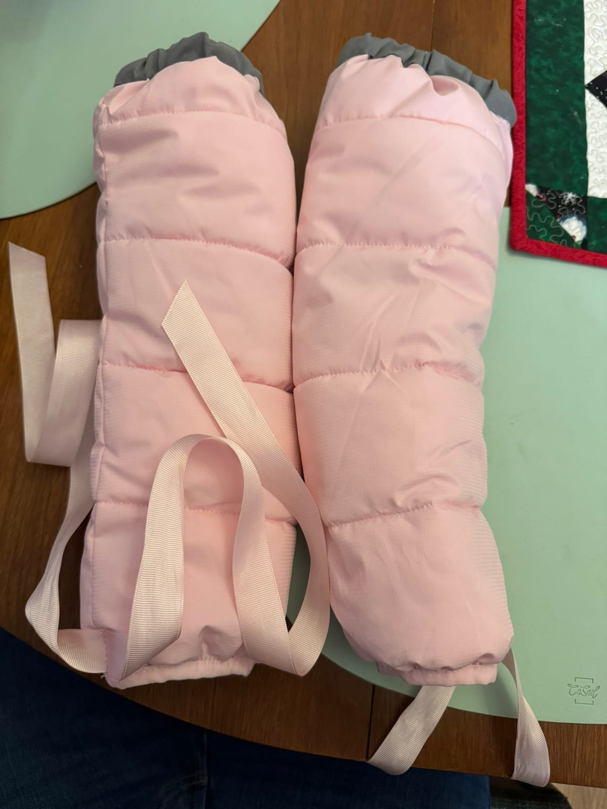
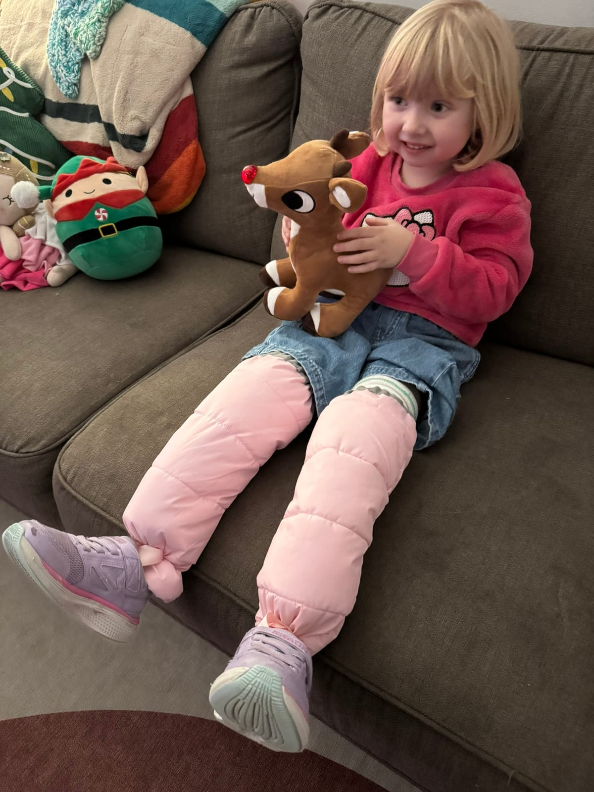
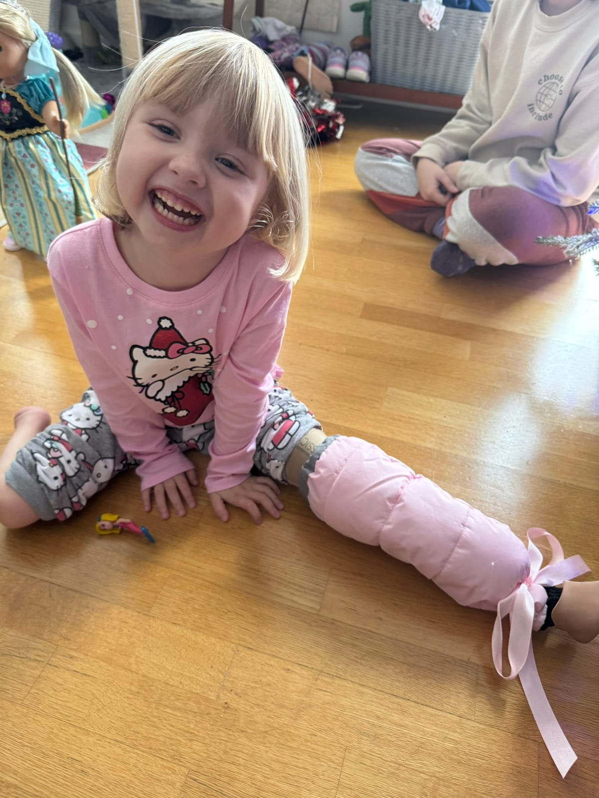

These are clothing resources and practical ideas we have found helpful for celebrating limb differences and making everyday dressing a little easier, from shirts and pants to shoes and bags.
Mermaid Strides
Mermaid Strides is an Etsy store creating inspiring apparel that celebrates limb differences. Their designs feature unique, kid-friendly characters with prosthetic limbs and other limb differences, helping children see strength and joy reflected in every piece.
Winter Leg Wraps for Prosthetics
We learned pretty quickly that keeping Gwen’s legs warm in the winter was harder than we expected. The first time it became an issue was during a sledding trip. We bundled her up the same way you would any kid with boots, snow pants, and layers. It was very cold, so we did not stay out long, even though she was having a great time.
She never complained while we were outside. But once we got back in the car and it started to warm up, she suddenly let out a painful cry. I pulled over, took her prosthetics off, and her residual limbs were ice cold. After a few minutes they warmed back up and she was okay, but it was scary.
The next winter we went to an outdoor stadium hockey game. This time we layered even more. Multiple pairs of pants, extra insulation, everything we could think of. It was not even that cold outside, but once again, after getting back into the warm car, she cried out in pain. After that second experience, we knew we needed a better solution.
What we realized was that cold air was getting in through the bottom of her pants and straight into her prosthetic sockets. Socks do not come up high enough to help, and once cold air gets into the socket, it stays there. We needed something that would block the air completely.
We started with simple cotton leg warmers and added a drawstring at the bottom so they could be tied like a shoelace and sealed around the bottom of her prosthetics. That helped, and we still send her to school in those on cold days.
We chose to use a winter coat as the starting point because it already solved a lot of problems for us. The fabric was wind resistant, it had insulation, and it already included a lining. The sleeves were also roughly the right shape for what we needed. It ended up being much easier to take something that was already designed for cold weather and modify it than to buy all the materials separately and try to build something from scratch.
We bought a winter coat in a size large enough that the sleeves would fit over her prosthetic legs. We cut the sleeves off, sewed elastic into the shoulder end, and sealed it back up. Then we added a pink ribbon near the bottom of each sleeve so we could tie it in a bow around the bottom of her prosthetics. That seal keeps cold air from getting into the socket.
So far, we have taken her to multiple outdoor events in cold weather without any issues. If your child struggles with cold prosthetics in the winter, this approach might be worth trying.




Adaptive Footwear
Shoes that open wider or skip traditional laces can make mornings and prosthetic changes simpler. These are some brands that offer adaptive or easy-on options for kids.
BILLY Footwear
BILLY makes kids shoes and boots with a zipper that wraps around so the shoe can open nearly flat. That full opening can help with braces, orthotics, and getting shoes on without forcing a foot through a tight opening. Some styles come in wider widths and have removable insoles.
Stride Rite
Stride Rite has adaptable kids sneakers built with room for orthotics. Their Adapt / Adaptable styles often use a longer hook-and-loop strap and a removable insole so you can adjust depth and width.
See Kai Run
See Kai Run sells an Adapt line for kids who need more space for AFOs, SMOs, or custom insoles. The idea is a roomier fit without giving up the support their regular kids shoes are known for.
Friendly Shoes
Friendly Shoes makes adaptive footwear for kids and adults. Their designs focus on opening the shoe wider so it is easier to get on, including options meant to work with AFOs.
Skechers
Skechers Hands Free Slip-ins let kids step in without bending down to pull the heel up. They also sell other easy-on kids styles with stretch closures. Worth browsing if you want something you can find in a lot of regular shoe stores.
Nike EasyOn
Nike EasyOn (what used to be called FlyEase on some shoes) includes kids styles with features like a lift-up lace area, collapsible heel, or hook-and-loop strap so shoes go on with fewer steps.
Adaptive Clothing
More mainstream stores now carry kids adaptive clothing, including everyday pieces and school uniforms with easier closures or roomier fits. If off-the-shelf pants still do not work, a tailor can help too.
French Toast
French Toast sells adaptive school uniforms for kids. Look for easier closures, pull loops, and tagless options that make dressing for school less of a struggle.
Target
Target carries kids adaptive clothing in its kids and Cat & Jack lines. Selection changes by season, but their adaptive kids section is a solid place to browse.
JCPenney
JCPenney also sells kids adaptive clothing and accessories, with options for sensory needs, easier closures, and more independent dressing.
RAGS
RAGS makes soft kids clothes designed for easier dressing, including rompers with stretchy necklines and fewer snaps, buttons, and zippers. A lot of families look at them for sensory-friendly, easy-on outfits.
Tailor Modifications for Pants
Store adaptive pants are not always the right length, style, or fit. A local tailor can sometimes modify regular pants so they work better with prosthetics or braces.
Common changes include adding a zipper along the outside seam or inseam so a pant leg opens from the hem up, or adjusting hems when legs are different lengths. If you can, bring the pants and the prosthetic or brace with you so the tailor can see how much room and zipper length you need. Ready-made side-zip adaptive pants also exist if you would rather buy than alter.
Adaptive Backpacks
Pottery Barn Kids
Pottery Barn Kids has adaptive Mackenzie backpacks in the same prints as their regular packs. They are built to hang on wheelchairs and other mobility devices, with straps that tuck away, easier zipper pulls, and details like an insulated pocket and ports for tubes. Handy to know about even if your child is not in a chair yet, since siblings and classmates may need them too.